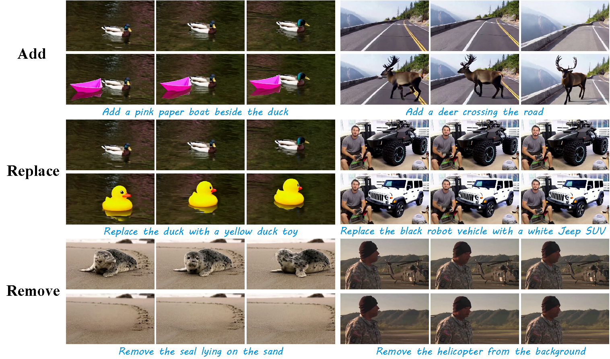
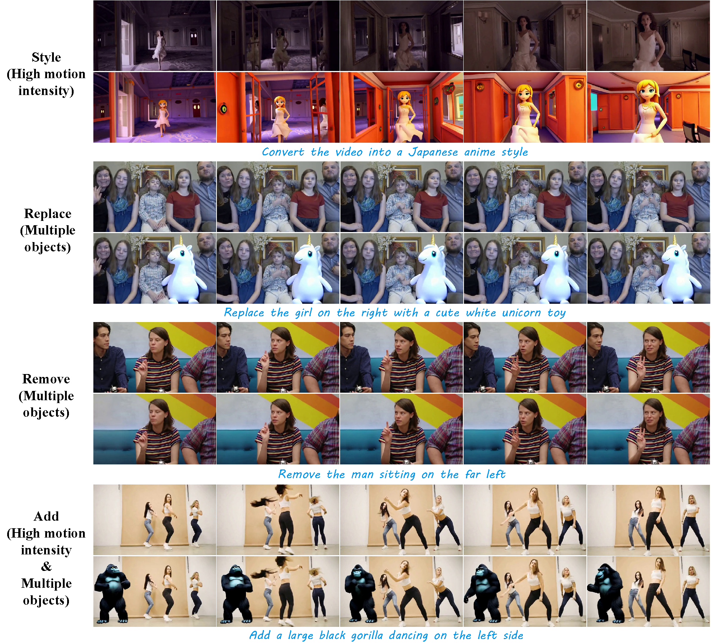
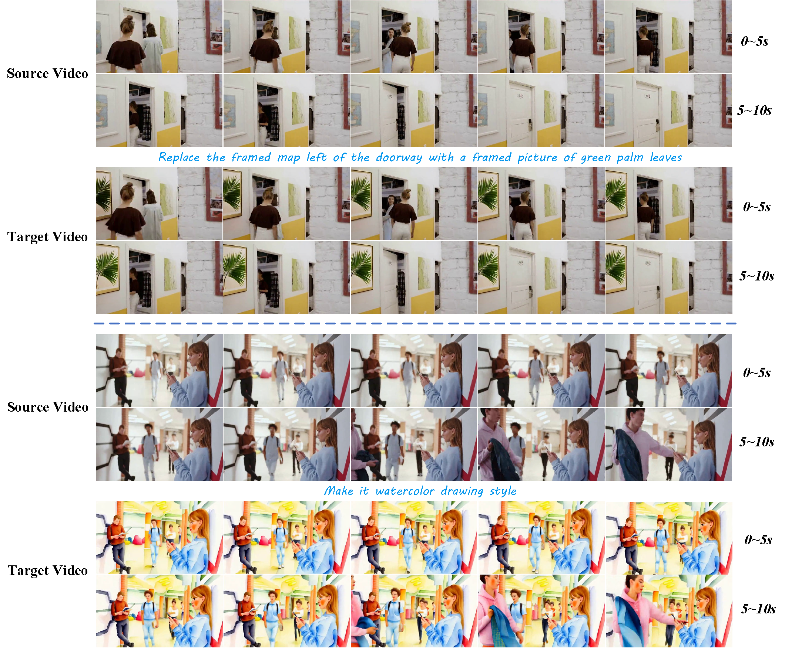
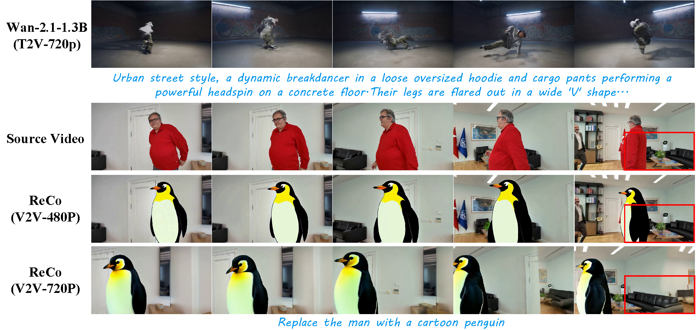
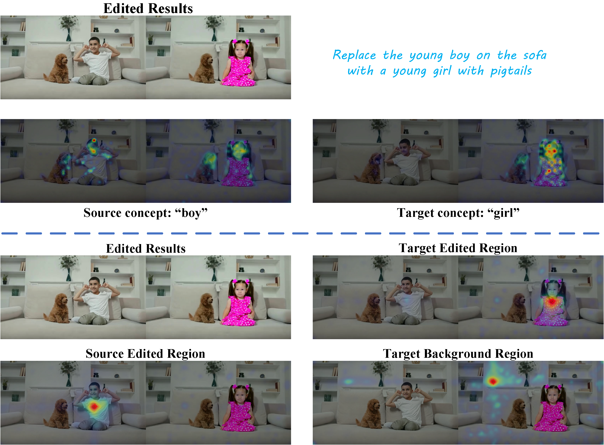
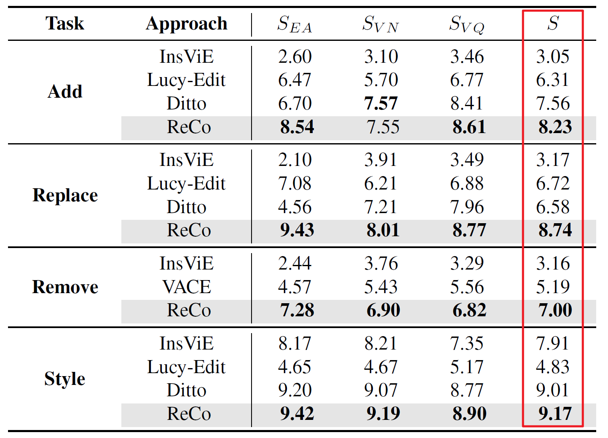
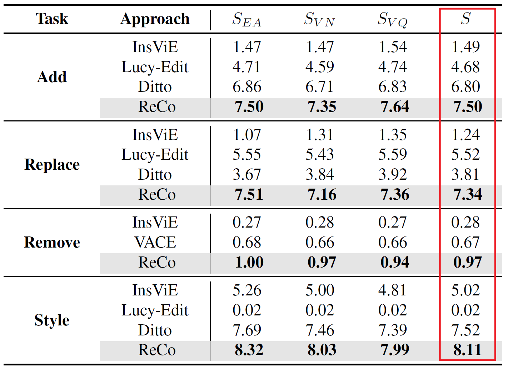
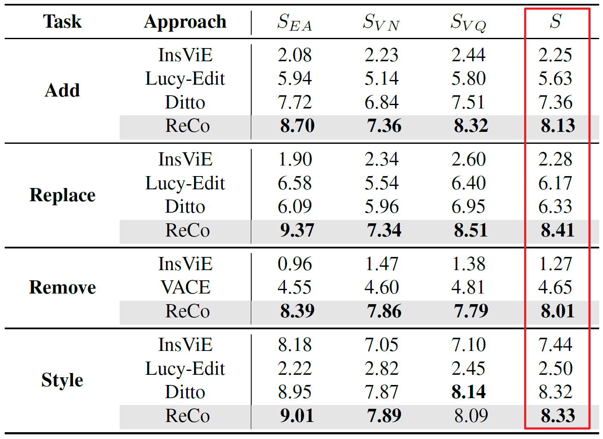
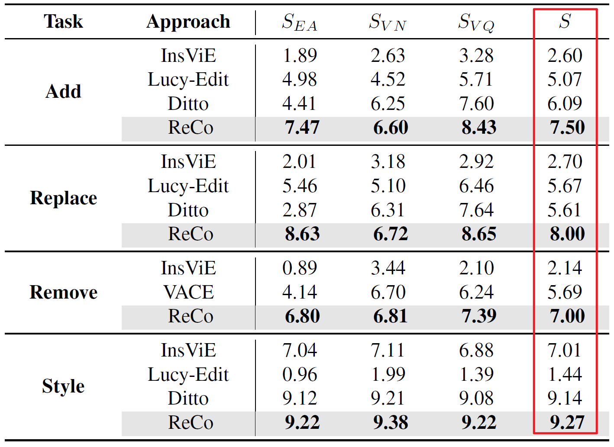

Rebuttal Supplementary Materials
Figure A
#figure-aExamples of edit results across three tasks, including object deletion, replacement, and addition, highlighting the resulting shadow and reflection effects. For each example, the top row shows the original video and the bottom row shows the edited video.

Figure B
#figure-bExamples of video editing results for four tasks in complex scenes, with a focus on highly dynamic, multi-object scenarios. For each example, the top row shows the original video and the bottom row shows the edited video.

Figure C
#figure-cExamples of long-video editing results for replacement and stylization tasks.

Figure D
#figure-dIllustration of the limitations of Wan-2.1-1.3B for 720p text-to-video generation, as well as the editing results of ReCo on 480p and 720p videos.

Figure E
#figure-eVisualization of the cross-attention and self-attention maps of ReCo during inference.
(a) Cross-attention maps (top): show how the full video latent attends to the source prompt and target prompt.
(b) Self-attention maps (bottom): visualize how points in the target edited region, source edited region, and target background region attend to the full video latent.

Table I
#table-iEvaluation results on ReCo-Bench using four VLMs, including two closed-source models (Gemini-2.5-Flash-Thinking and GPT-4o) and two open-source models (Kimi-k2.5 and Qwen-3.5-Plus). The trend is clearly reflected by the total scores in the last column of each table.
Gemini-2.5-Flash-Thinking

GPT-4o

Kimi-k2.5

Qwen-3.5-Plus
